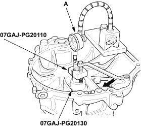
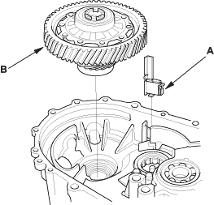
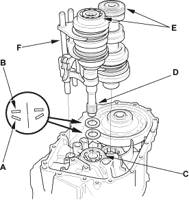

- Zero a dial gauge (A) on the end of the mainshaft.

- Turn the mainshaft holder bolt (B) clockwise; stop turning when the dial gauge (A) has reached its maximum movement. The reading on the dial gauge is the amount of mainshaft end play.
Do not turn the mainshaft holder bolt more than 60° after the needle of the dial gauge stops moving. Applying more pressure with the mainshaft holder bolt this may damage the transmission.
- If the reading is within the standard, the clearance is correct. If the reading is not within the standard, recheck the shim thickness.
Standard:
0.11 - 0.17 mm (0.004 - 0.007 in.)

NOTE:
- Prior to reassembling, clean all the parts in solvent, dry them, and apply lubricant to any contact surfaces.
- Install the magnet (A) and differential assembly (B).

- Install the 28 mm spring washer (A) and 28 mm washer (B) over the ball bearing (C). Note the installation direction of the spring washer (A).

- Apply vinyl tape to the mainshaft splines (D) to protect the seal. Install the mainshaft and countershaft (E) into the shift forks (F), and install them as an assembly.